Fun Projects for your LEGO® MINDSTORMS® NXT!
|
|
Fun Projects for your LEGO® MINDSTORMS® NXT! |
| Line Follower |
|

1
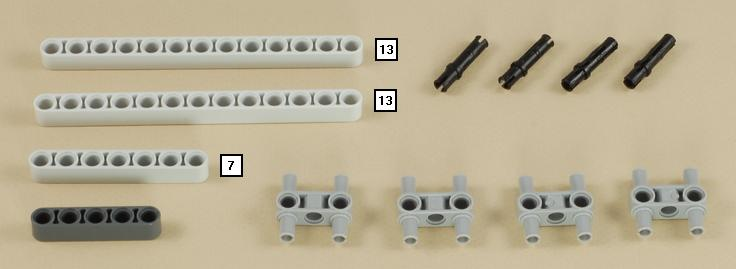
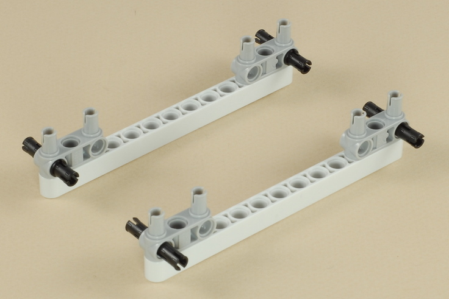
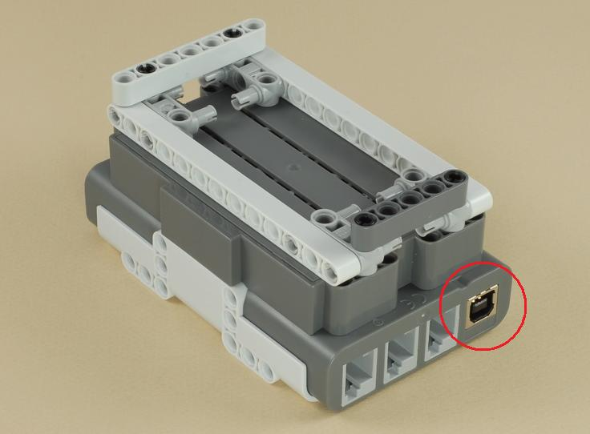
2
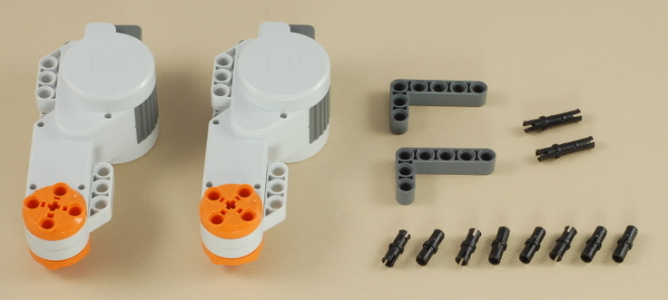
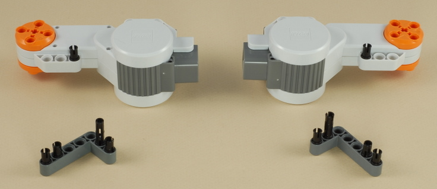
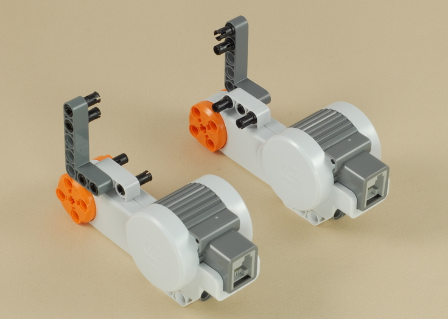
| Note: Be sure the NXT brick is facing the right way. It will only fit correctly this way. |
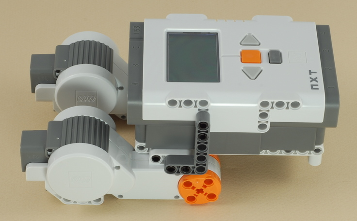
3
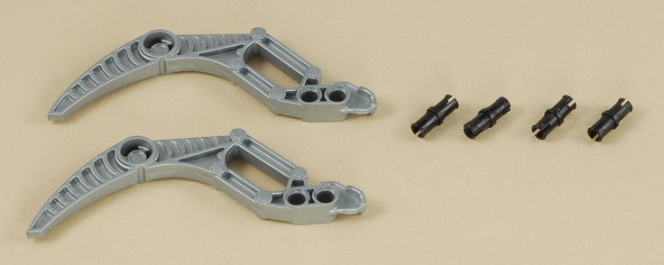
| The gray "skis" (which are on the front on the robot) allow the robot to slide from side to side so that it can turn accurately. |
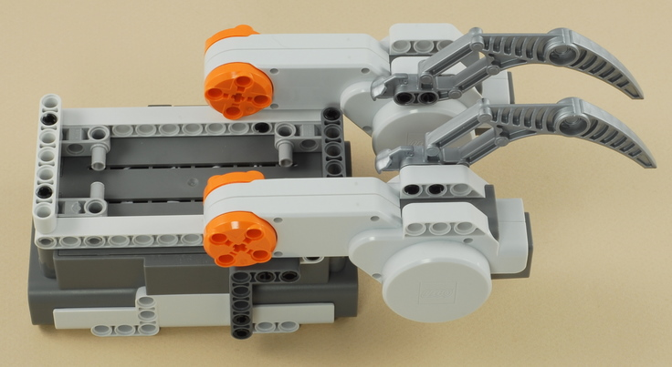
4
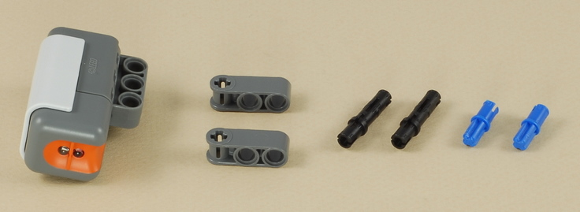
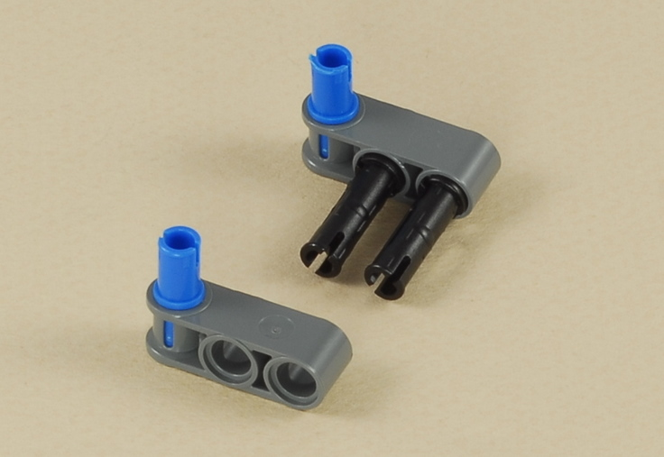
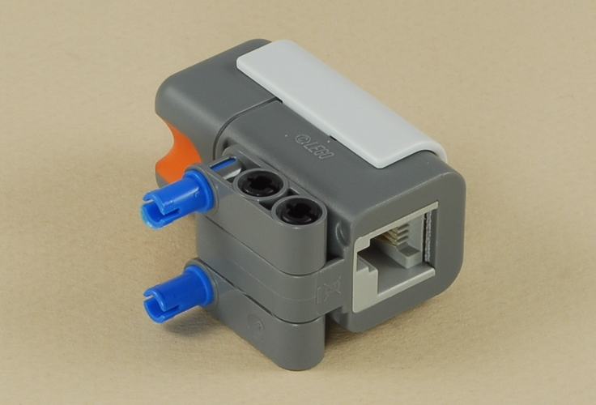
5
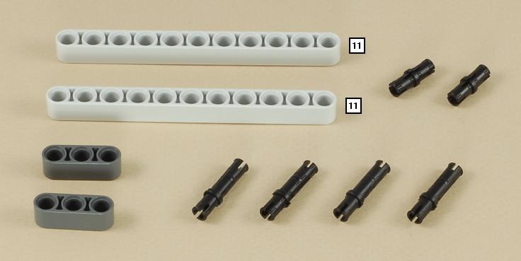
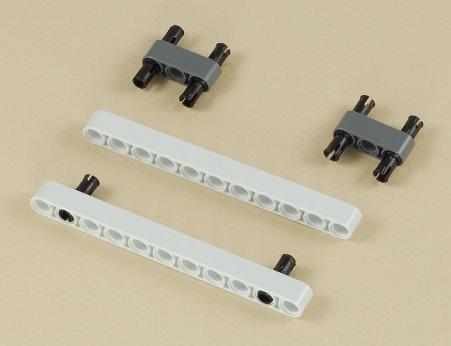
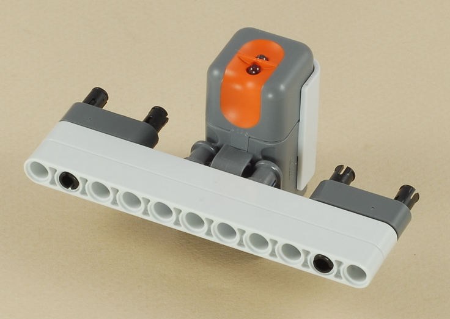
| The light sensor is placed between the front "skis" and near the place where the skis contact the surface, so that the skis will push down lightly and smooth out any large wrinkles in the mat under the light sensor, to help it get a consistent reading. |
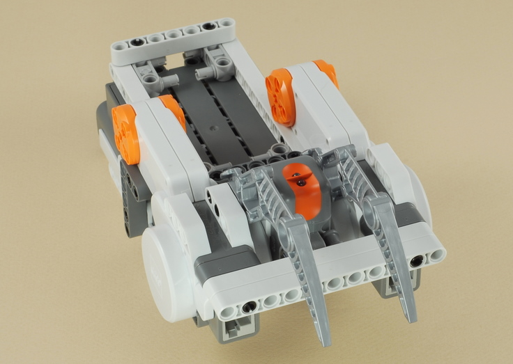
6
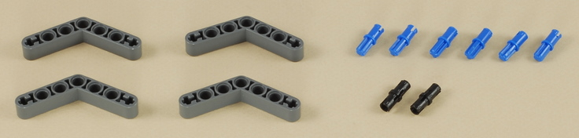
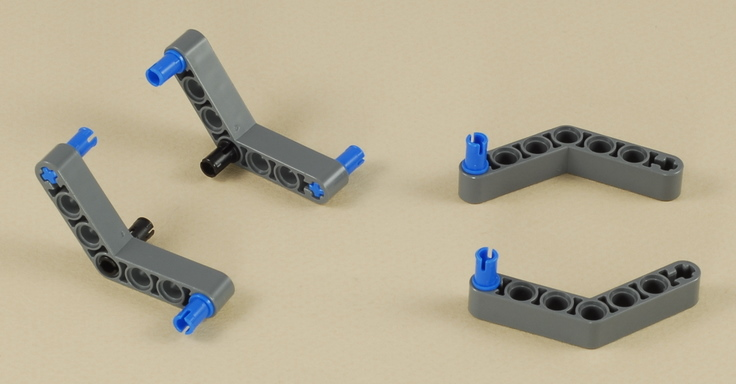
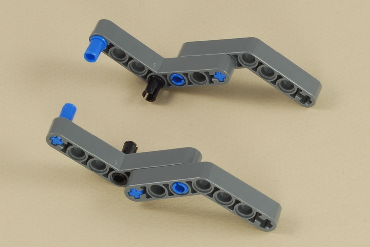
| The dark gray angled beams in the back will normally
hover just above the surface, but they are there to provide stability in
case the robot tries to tip backward (for example, when pressing the NXT
buttons). See the tip on weight balance. |
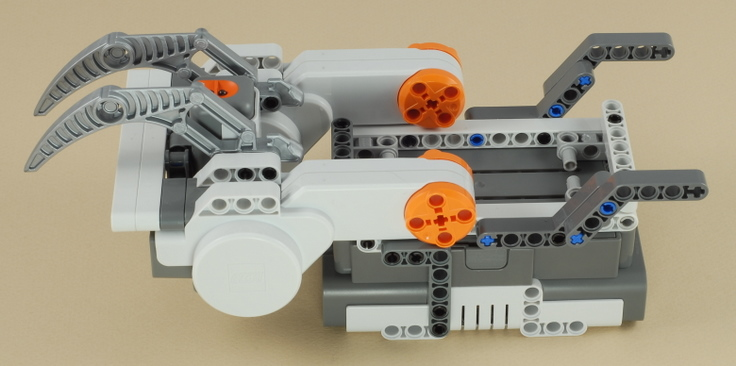
7
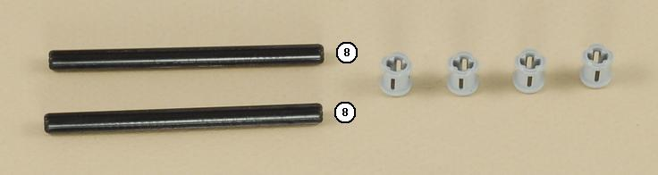
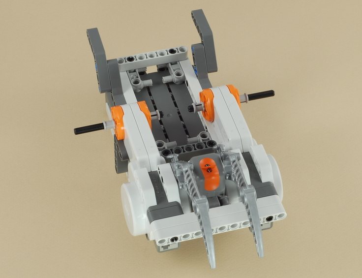
8
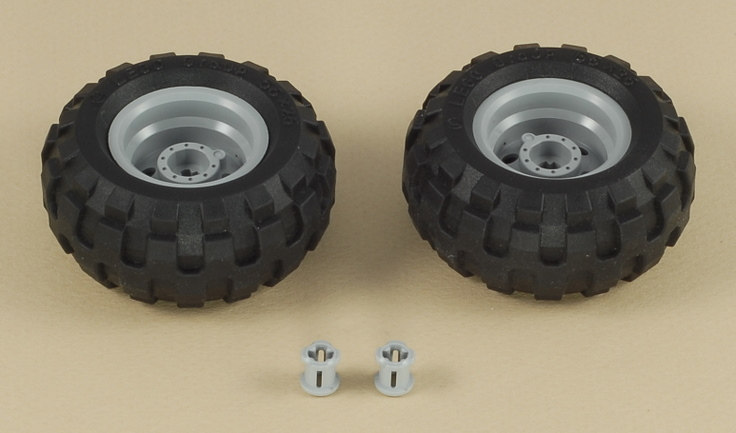
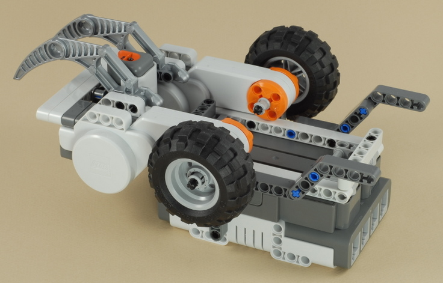
9
| Use the shortest wire to connect the light sensor to port 3 on the NXT. If you temporarily remove the two cross beams on the bottom of the robot, you can route the wire neatly under the robot as shown. |
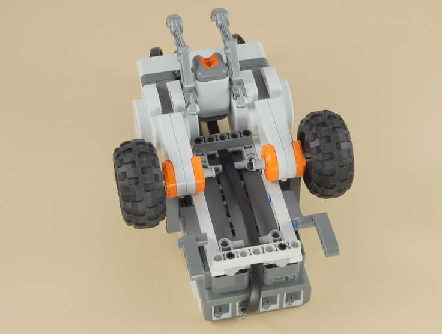
10
| Use two wires to connect the left motor (the light
sensor is near the front of the robot) to port B on the NXT and
the right motor to port C on the NXT.
Note: The gray skis and the light sensor are on the front end of the robot. The NXT display should be right side up for reading when you are behind the robot. |
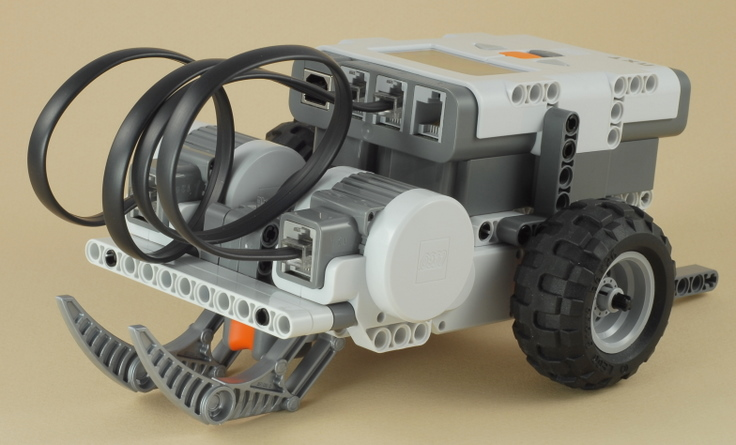
|
Building Tip: Weight Balance When building a robot that depends on sliding on something (the gray front "skis" in this project) to turn, it is important to consider the weight balance of the robot. You want to have most of the robot's weight over the drive wheels, and just enough weight over the sliding part to keep the robot stable and avoid tipping over. If too much weight is over the sliding part, the robot will struggle to turn, might get caught up and stall, or the drive wheels might start slipping. This Line Follower robot is designed to have almost all of its weight over the drive wheels. Using a small scale in the experiment shown below, we find that the robot weights a total of 622 grams, with 560 grams over the back wheels. This means that the robot has 90% (560/622) of the weight over the wheels and only 10% of the weight over the front skis. This is good for line following at slow speeds, but note that it could cause the robot to pop a wheelie if a lot of power was suddenly given to both wheels going forward (see the Dragster).
|
| Line
Follower Programming There are three programs provided for the Line Follower: The LineFollow2 program is a basic "Two State" line follower that uses a simple "zig-zag" method of line following where the robot is constantly turning back and forth as it sees either side of the color boundary. The robot is always either turning left or right (the two states), so it is never actually straight, even when the line is straight. Before using this program, you will want to calibrate the sensor (on the robot) for the lighting conditions of the surface and line you are using (see below for instructions). To get the best start for the line following, start the robot with the sensor near the right edge of the line. The LineFollow5 program uses a somewhat more complex "Five State" method of following the line with the goal of going straighter and smoother (and therefore faster). When the robot gets aligned with the color boundary that it is trying to follow, the robot will go straight as far as it can and make small corrections left and right to try to stay on the boundary without zigzagging as much. See the program comments for details. Before using this program, you will want to calibrate the sensor (on the robot) for the lighting conditions of the surface and line you are using (see below for instructions). To get the best start for the line following, start the robot with the sensor near the right edge of the line. The LineFollowPro program uses a "Proportional" line following strategy, which involves several math calculations to calculate an amount of steering correction that is proportional to the distance off of the desired path (the right edge of the line) that the robot thinks it is. This provides for a smooth and continuous transition from going straight, to small corrections, all the way to large corrections, which allows the robot to drive smoother and faster. In addition, the LineFollowPro program starts with an automatic calibration sequence, where the robot scans the line and the surface to the right of the line to automatically determine the minimum and maximum expected brightness values. This eliminates the need to calibrate the light sensor. The LineFollowPro program should be started with the light sensor directly over the center of the line. |
|
Before line following using either the LineFollow2 or LineFollow5 program, you should "calibrate" the light sensor to the actual conditions expected. With the sensor mounted on the robot where it will be used, and the robot placed over the actual line it will be following, a calibration process takes two light sensor readings, one directly over the line (minimum = darkest), and one over the surface away from the line (maximum = brightest). The NXT will then adjust the numbers reported by the light sensor so that the minimum value expected will be reported as 0 and the maximum as 100. The results of light sensor calibration are remembered until you calibrate again, even after the NXT is turned off (the results are stored in a data file in the NXT's memory), so you only need to calibrate once each time your conditions change. Then you can run your robot as many times as you want without needing to calibrate before each run.
Calibration allows you to make make certain assumptions about the light readings to simplify the program. In particular, the LineFollow2 program assumes that the edge of the line, over which the sensor sees about half line and half surface, will report a brightness of 50. The LineFollow5 program assumes a midpoint of 50 and also assumes that the total range of light readings will range from 0 to 100.
In addition to allowing a program that uses the light sensor to be simpler, calibration also makes it possible to adapt the robot to different lighting conditions without changing the program. For example, if you want to run the robot over a different colored surface (or the room lighting changes), you would simply have to re-calibrate the sensor before running the same line follower program on the new surface.
How to Calibrate the Light Sensor
There are two ways to calibrate the light sensor: using the method built in to the NXT programming software, or using a (somewhat friendlier) calibration program provided below.
To use the method built into the NXT software, connect your NXT to your PC (with the NXT cable or Bluetooth), then select the Tools -> Calibrate Sensors menu item, choose Light Sensor, and choose the correct sensor port (port 3 is used by these line following programs) and press the Calibrate button. At this point the software will download a program called "Calibrate" to the NXT and run it. Place your robot over the surface to be used and use the screen prompts to sample the two values (see Taking the Two Calibration Readings below).
A similar but somewhat friendlier calibration program is provided here:
The Calibrate_3 program will prompt you to sample two light readings for a light sensor on port 3, one for "Black" and one for "White" (see Taking the Two Calibration Readings below). Note that "White" just means the lightest part of the surface being run on. If your surface is tan colored, for example, just sample that for "White" (and similar for "Black"). The program then follows up with a test of light readings that continuously reports the calibrated brightness seen, so that you can easily see and verify the results of your calibration (after calibration, "Black" should report very close to 0 and "White" very close to 100).
The View_Light_3 program can be used as a measurement tool to simply display the calibrated light readings currently seen by a light sensor on port 3. This is useful because the built-in "View Reflected Light" feature of the NXT reports uncalibrated readings and will therefore not match the values you want to use in your programs.
The Del_Calibrate program will delete the stored light sensor calibration from the NXT's memory and restore the "uncalibrated" state, in case you want to use that or experiment with the difference.
Taking the Two Calibration Readings
Using either the built-in NXT Calibrate program, or the Calibrate 3 program provided above, you will use the on-screen prompts to sample two light readings, with the robot on the actual surface to be used and the sensor in its actual position on the robot. |
| 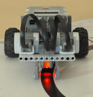 | 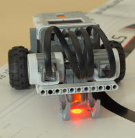 | 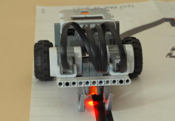 |
| When prompted to sample the "Min" or "Black" reading, position the sensor so that the red spot is centered over the line and then press the Enter button on the NXT. | When prompted to sample the "Max" or "White" reading, position the sensor so that the red spot is completely over the surface away from the line and press the Enter button on the NXT. | When line following, the robot will try to align itself centered over the boundary between white and black (not centered over the black line), with black to the robot's left. Here the brightness seen by the sensor is halfway between the black/min and white/max readings. |
Challenges
|
|
Copyright
©
2007-2010 by Dave Parker. All rights reserved. |